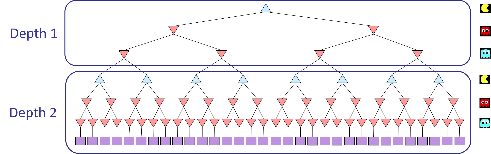

Homework Two
Games
1 Introduction
You will design agents for the classic version of Pacman, including ghosts. Along the way, you will implement both minimax and expectimax search and try your hand at evaluation function design.
The code base has not changed much from the previous assignment, but please start with a fresh installation, and don’t reuse files from Homework 1.
We provide the autograder for you to grade your answers locally. This can be run on all questions with the command:
python autograder.pyIt can be run for one particular question, such as q2, by:
python autograder.py -q q2It can be run for one particular test by commands of the form:
python autograder.py -t test_cases/q2/0-small-treeBy default, the autograder displays graphics with the -t option, but doesn’t with the -q option. You can force graphics by using the --graphics flag, or force no graphics by using the --no-graphics flag.
The code for this assignment contains the following files in games dot zip.
| Files you’ll edit: | |
multiAgents.py |
Where all of your multi-agent search agents will reside. |
| Files you might want to look at: | |
pacman.py |
The main file that runs Pacman games. This file also describes a Pacman GameState type, which you will use extensively in this assignment. |
game.py |
The logic behind how the Pacman world works. This file describes several supporting types like AgentState, Agent, Direction, and Grid. |
util.py |
Useful data structures for implementing search algorithms. You don’t need to use these for this assignment, but may find other functions defined here to be useful. |
| Supporting files you can ignore: | |
graphicsDisplay.py |
Graphics for Pacman |
graphicsUtils.py |
Support for Pacman graphics |
textDisplay.py |
ASCII graphics for Pacman |
ghostAgents.py |
Agents to control ghosts |
keyboardAgents.py |
Keyboard interfaces to control Pacman |
layout.py |
Code for reading layout files and storing their contents |
autograder.py |
Autograder |
testParser.py |
Parses autograder test and solution files |
testClasses.py |
General autograding test classes |
test_cases/ |
Directory containing the test cases for each question |
multiagentTestClasses.py |
Specific autograding test classes |
Files to Edit and Submit: You will fill in portions of multiAgents.py during the assignment. Once you have completed the assignment, you will submit this files to the submit server. Please submit a single (uncompressed) .tar containing the file at the root of the tarball. The server will allow you to submit multiple times for credit, but please run the autograder locally first.
Evaluation: Your code will be autograded for technical correctness. Please do not change the names of any provided functions or classes within the code, or you will wreak havoc on the autograder. However, the correctness of your implementation – not the autograder’s judgements – will be the final judge of your score. If necessary, we will review and grade assignments individually to ensure that you receive due credit for your work.
Academic Dishonesty: This assignment is individual effort. Please review the collaboration policy for the course and adhere to it.
2 Multi-Agent Pacman
First, play a game of classic Pacman by running the following command:
python pacman.pyand using the arrow keys to move. Now, run the provided ReflexAgent in multiAgents.py
python pacman.py -p ReflexAgentNote that it plays quite poorly even on simple layouts:
python pacman.py -p ReflexAgent -l testClassicInspect its code (in multiAgents.py) and make sure you understand what it’s doing.
3 Q1 (4 pts): Reflex Agent
Improve the ReflexAgent in multiAgents.py to play respectably. The provided reflex agent code provides some helpful examples of methods that query the GameState for information. A capable reflex agent will have to consider both food locations and ghost locations to perform well. Your agent should easily and reliably clear the testClassic layout:
python pacman.py -p ReflexAgent -l testClassicTry out your reflex agent on the default mediumClassic layout with one ghost or two (and animation off to speed up the display):
python pacman.py --frameTime 0 -p ReflexAgent -k 1python pacman.py --frameTime 0 -p ReflexAgent -k 2How does your agent fare? It will likely often die with 2 ghosts on the default board, unless your evaluation function is quite good.
Note: Remember that newFood has the function asList()
Note: As features, try the reciprocal of important values (such as distance to food) rather than just the values themselves.
Note: The evaluation function you’re writing is evaluating state-action pairs; in later parts of the assignment, you’ll be evaluating states.
Note: You may find it useful to view the internal contents of various objects for debugging. You can do this by printing the objects’ string representations. For example, you can print newGhostStates with print(newGhostStates).
Options: Default ghosts are random; you can also play for fun with slightly smarter directional ghosts using -g DirectionalGhost. If the randomness is preventing you from telling whether your agent is improving, you can use -f to run with a fixed random seed (same random choices every game). You can also play multiple games in a row with -n. Turn off graphics with -q to run lots of games quickly.
Grading: We will run your agent on the openClassic layout 10 times. You will receive 0 points if your agent times out, or never wins. You will receive 1 point if your agent wins at least 5 times, or 2 points if your agent wins all 10 games. You will receive an additional 1 point if your agent’s average score is greater than 500, or 2 points if it is greater than 1000. You can try your agent out under these conditions with
python autograder.py -q q1To run it without graphics, use:
python autograder.py -q q1 --no-graphics4 Q2 (5 pts): Minimax
Now you will write an adversarial search agent in the provided MinimaxAgent class stub in multiAgents.py. Your minimax agent should work with any number of ghosts, so you’ll have to write an algorithm that is slightly more general than what you’ve previously seen in lecture. In particular, your minimax tree will have multiple min layers (one for each ghost) for every max layer.
Your code should also expand the game tree to an arbitrary depth. Score the leaves of your minimax tree with the supplied self.evaluationFunction, which defaults to scoreEvaluationFunction. MinimaxAgent extends MultiAgentSearchAgent, which gives access to self.depth and self.evaluationFunction. Make sure your minimax code makes reference to these two variables where appropriate as these variables are populated in response to command line options.
Important: A single search ply is considered to be one Pacman move and all the ghosts’ responses, so depth 2 search will involve Pacman and each ghost moving two times (see diagram below).

Grading: We will be checking your code to determine whether it explores the correct number of game states. This is the only reliable way to detect some very subtle bugs in implementations of minimax. As a result, the autograder will be very picky about how many times you call GameState.generateSuccessor. If you call it any more or less than necessary, the autograder will complain. To test and debug your code, run
python autograder.py -q q2This will show what your algorithm does on a number of small trees, as well as a pacman game. To run it without graphics, use:
python autograder.py -q q2 --no-graphics4.1 Hints and Observations
Implement the algorithm recursively using helper function(s).
The correct implementation of minimax will lead to Pacman losing the game in some tests. This is not a problem: as it is correct behavior, it will pass the tests for full credit.
The evaluation function for the Pacman test in this part is already written (
self.evaluationFunction). You shouldn’t change this function, but recognize that now we’re evaluating states rather than actions, as we were for the reflex agent. Look-ahead agents evaluate future states whereas reflex agents evaluate actions from the current state.The minimax values of the initial state in the
minimaxClassiclayout are 9, 8, 7, -492 for depths 1, 2, 3 and 4 respectively. Note that your minimax agent will often win (665/1000 games for us) despite the dire prediction of depth 4 minimax.python pacman.py -p MinimaxAgent -l minimaxClassic -a depth=4Pacman is always agent 0, and the agents move in order of increasing agent index.
All states in minimax should be
GameStates, either passed in togetActionor generated viaGameState.generateSuccessor. You will not be abstracting to simplified states.On larger boards such as
openClassicandmediumClassic(the default), you’ll find Pacman to be good at not dying, but quite bad at winning. He’ll often thrash around without making progress. He might even thrash around right next to a dot without eating it because he doesn’t know where he’d go after eating that dot. Don’t worry if you see this behavior, question 5 will clean up all of these issues.When the Pacman believes that his death is unavoidable, he will try to end the game as soon as possible because of the constant penalty for living. Sometimes, this is the wrong thing to do with random ghosts, but minimax agents always assume the worst:
python pacman.py -p MinimaxAgent -l trappedClassic -a depth=3Make sure you understand why Pacman rushes the closest ghost in this case.
5 Q3 (5 pts): Alpha-Beta Pruning
Make a new agent that uses alpha-beta pruning to more efficiently explore the minimax tree, in AlphaBetaAgent. Again, your algorithm will be slightly more general than the pseudocode from lecture, so part of the challenge is to extend the alpha-beta pruning logic appropriately to multiple minimizer agents.
You should see a speed-up (perhaps depth 3 alpha-beta will run as fast as depth 2 minimax). Ideally, depth 3 on smallClassic should run in just a few seconds per move or faster.
python pacman.py -p AlphaBetaAgent -a depth=3 -l smallClassicThe AlphaBetaAgent minimax values should be identical to the MinimaxAgent minimax values, although the actions it selects can vary because of different tie-breaking behavior. Again, the minimax values of the initial state in the minimaxClassic layout are 9, 8, 7 and -492 for depths 1, 2, 3 and 4 respectively.
Grading: Because we check your code to determine whether it explores the correct number of states, it is important that you perform alpha-beta pruning without reordering children. In other words, successor states should always be processed in the order returned by GameState.getLegalActions. Again, do not call GameState.generateSuccessor more than necessary.
You must not prune on equality in order to match the set of states explored by our autograder. (Indeed, alternatively, but incompatible with our autograder, would be to also allow for pruning on equality and invoke alpha-beta once on each child of the root node, but this will not match the autograder.)
The pseudo-code below represents the algorithm you should implement for this question. It varies from the reference implementation of Alpha-Beta pruning in the text/lecture by capturing more than two agents with a scalar value \(v\) (because the ghosts are all cooperating to defeat the Pacman).
To test and debug your code, run
python autograder.py -q q3This will show what your algorithm does on a number of small trees, as well as a pacman game. To run it without graphics, use:
python autograder.py -q q3 --no-graphicsThe correct implementation of alpha-beta pruning will lead to Pacman losing the game for some of the tests. This is not a problem: as it is correct behavior, you will earn full credit.
6 Q4 (5 pts): Expectimax
Minimax and alpha-beta are great, but they both assume that you are playing against an adversary who makes optimal decisions. As anyone who has ever won tic-tac-toe can tell you, this is not always the case. In this question you will implement the ExpectimaxAgent, which is useful for modeling probabilistic behavior of agents who may make suboptimal choices.
As with the search and problems yet to be covered in this class, the beauty of these algorithms is their general applicability. To expedite your own development, we’ve supplied some test cases based on generic trees. You can debug your implementation on small the game trees using the command:
python autograder.py -q q4Debugging on these small and manageable test cases is recommended and will help you to find bugs quickly.
Once your algorithm is working on small trees, you can observe its success in Pacman. Random ghosts are of course not optimal minimax agents, and so modeling them with minimax search may not be appropriate. ExpectimaxAgent will no longer take the min over all ghost actions, but the expectation according to your agent’s model of how the ghosts act. To simplify your code, assume you will only be running against an adversary which chooses amongst their getLegalActions uniformly at random.
To see how the ExpectimaxAgent behaves in Pacman, run:
python pacman.py -p ExpectimaxAgent -l minimaxClassic -a depth=3You should now observe a more cavalier approach in close quarters with ghosts. In particular, if Pacman perceives that he could be trapped but might escape to grab a few more pieces of food, he’ll at least try. Investigate the results of these two scenarios:
python pacman.py -p AlphaBetaAgent -l trappedClassic -a depth=3 -q -n 10python pacman.py -p ExpectimaxAgent -l trappedClassic -a depth=3 -q -n 10You should find that your ExpectimaxAgent wins about half the time, while your AlphaBetaAgent always loses. Make sure you understand why the behavior here differs from the minimax case.
The correct implementation of expectimax will lead to Pacman losing some of the tests. This is not a problem: as it is correct behaviour, it will pass the tests.
7 Q5 (6 pts): Evaluation Function
Write a better evaluation function for Pacman in the provided function betterEvaluationFunction. The evaluation function should evaluate states, rather than actions like your reflex agent evaluation function did. With depth 2 search, your evaluation function should clear the smallClassic layout with one random ghost more than half the time and still run at a reasonable rate (to get full credit, Pacman should be averaging around 1000 points when he’s winning).
Grading: the autograder will run your agent on the smallClassic layout 10 times. We will assign points to your evaluation function in the following way:
- If you win at least once without timing out the autograder, you receive 1 points. Any agent not satisfying these criteria will receive 0 points.
- +1 for winning at least 5 times, +2 for winning all 10 times
- +1 for an average score of at least 500, +2 for an average score of at least 1000 (including scores on lost games)
- +1 if your games take on average less than 30 seconds on the autograder machine, when run with
--no-graphics. - The additional points for average score and computation time will only be awarded if you win at least 5 times.
- Please do not copy any files from the previous assignment, as it will not pass the autograder on Gradescope.
You can try your agent out under these conditions with
python autograder.py -q q5To run it without graphics, use:
python autograder.py -q q5 --no-graphics